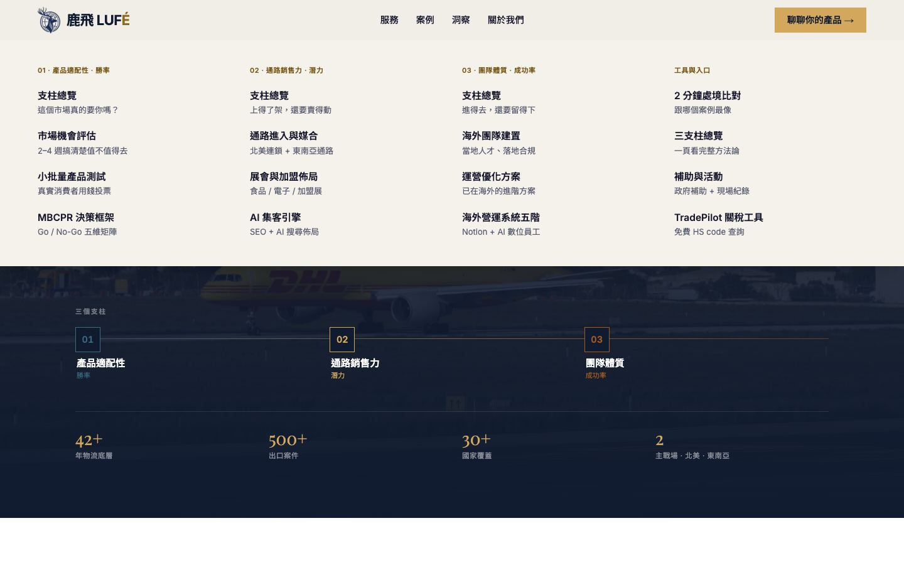
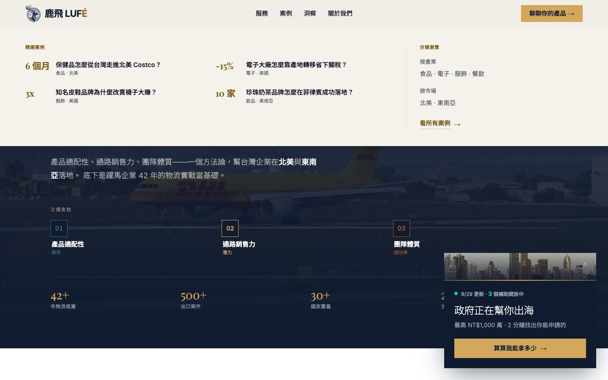
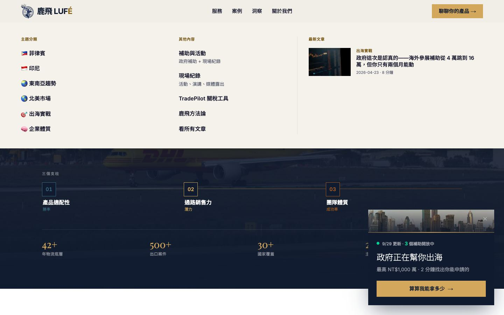
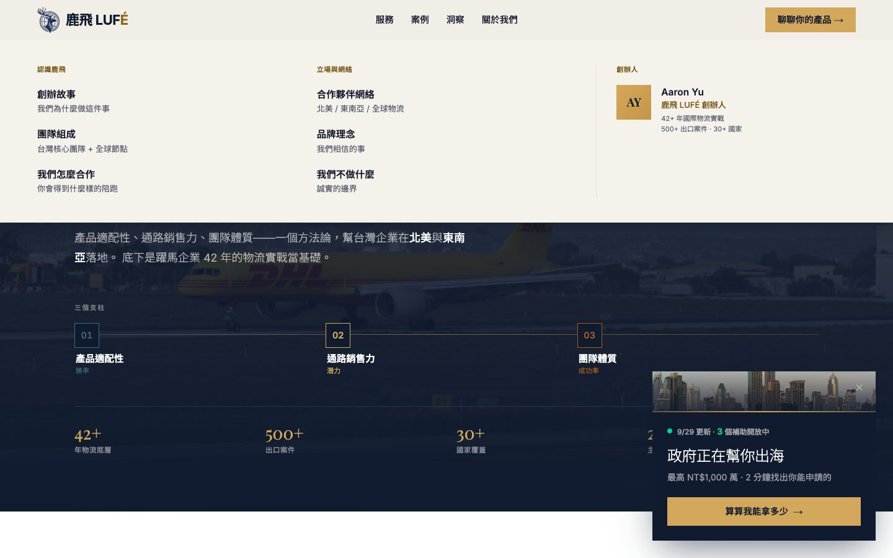
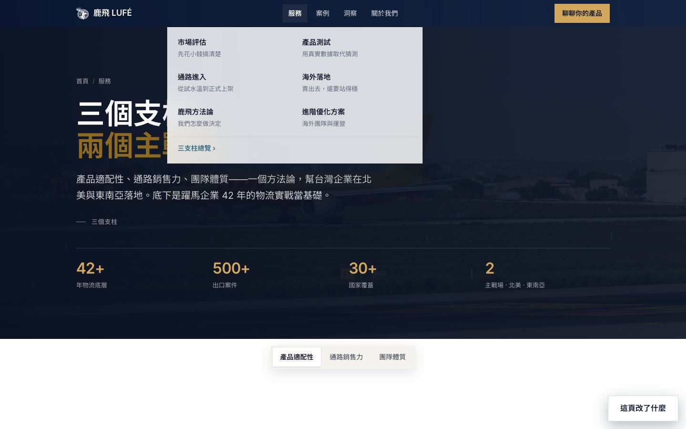
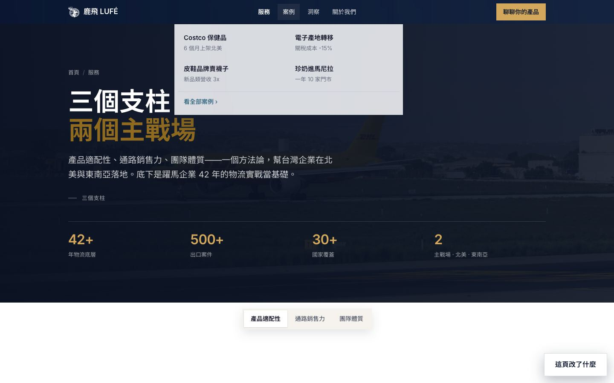

① 導覽列的下拉選單（桌機）
滑到「服務／案例／洞察／關於我們」時出現的選單。
A正式站原樣
從導覽列下面整片展開、撐滿畫面寬度的奶油色大面板。內容最完整：服務分三個支柱＋工具入口四欄；案例有數字；洞察有主題分類和最新文章縮圖；關於我們有創辦人卡。




B目前提案
毛玻璃小方框，從按鈕下方長出來。但內容是我自己排的：只有兩欄文字，沒有「團隊體質」分類、沒有「關於我們」下拉、沒有最新文章。


C內容照正式站，外觀與動作用 skill 我推薦
內容跟 A 一模一樣（四個下拉、每一欄、每一行說明都照抄）。差別：毛玻璃面板浮在頁面上（背後內容透得出來），從你滑到的那個字的位置長出來；在四個字之間移動時，面板不會關掉重開，而是原地換內容、高度順順調整——像 apple.com 的選單。
↓ 直接把滑鼠移到下面的「服務／案例／洞察／關於我們」試試看。

鹿飛 LUFÉ聊聊你的產品 →
精選案例
最新文章
 政府這次是認真的——海外參展補助從 4 萬跳到 16 萬，但你只有兩個月能動2026-04-23 · 8 分鐘
政府這次是認真的——海外參展補助從 4 萬跳到 16 萬，但你只有兩個月能動2026-04-23 · 8 分鐘創辦人
AY
Aaron Yu鹿飛 LUFÉ 創辦人42+ 年國際物流實戰500+ 出口案件 · 30+ 國家
← 滑鼠移到上面四個字之間來回移動